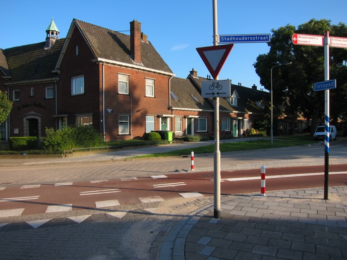
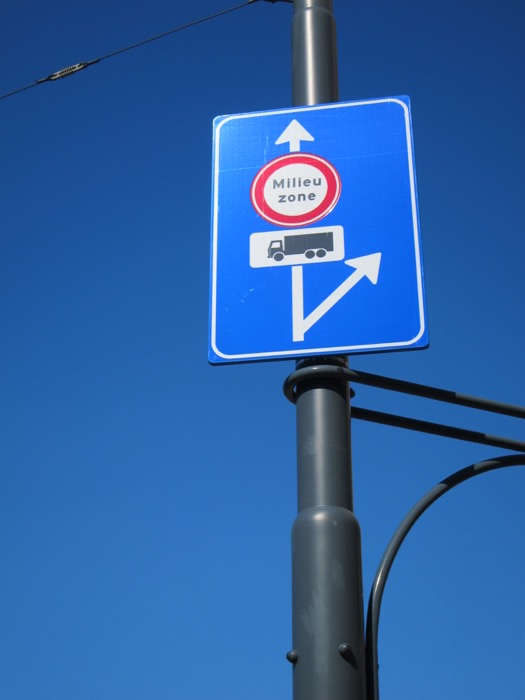
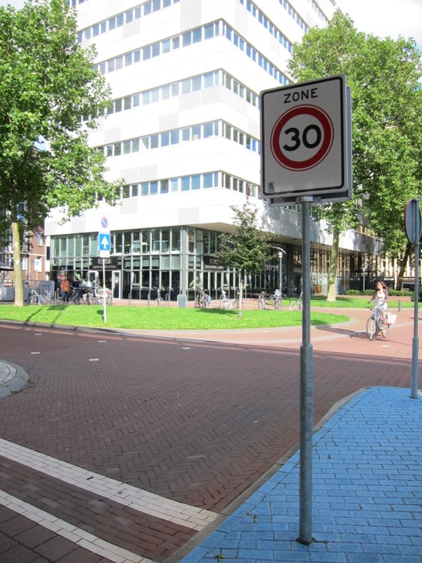
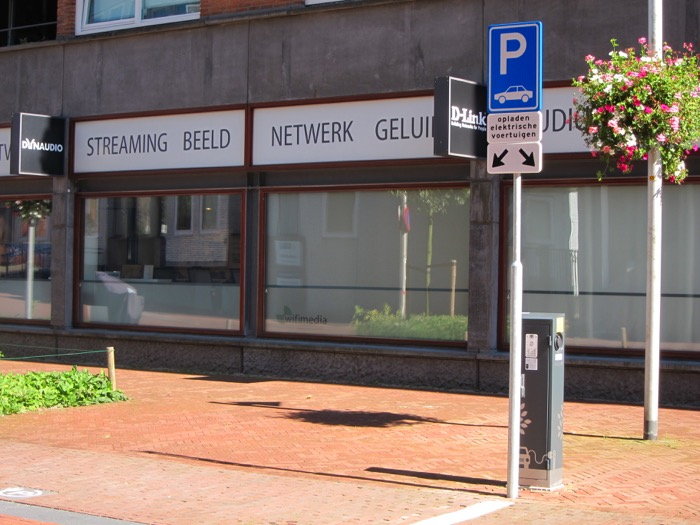
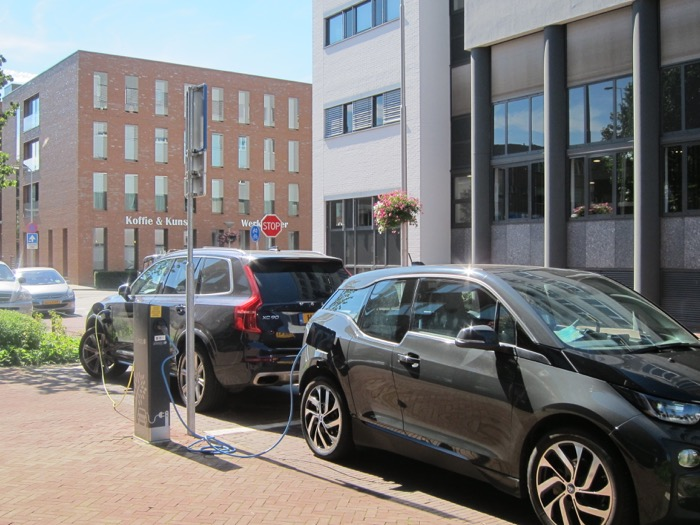
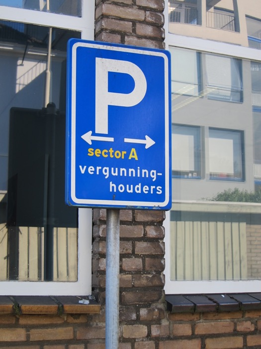
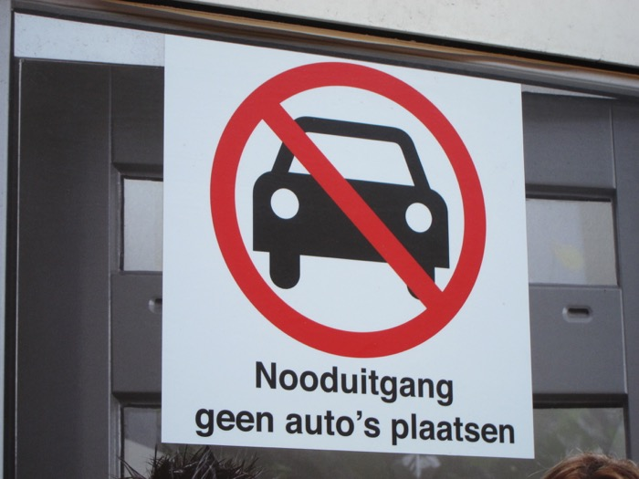
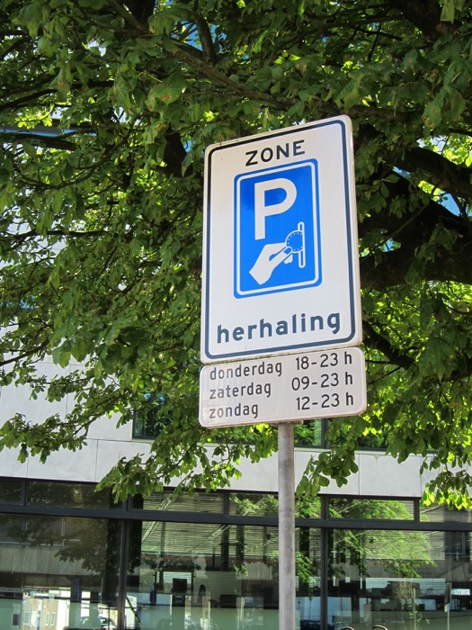
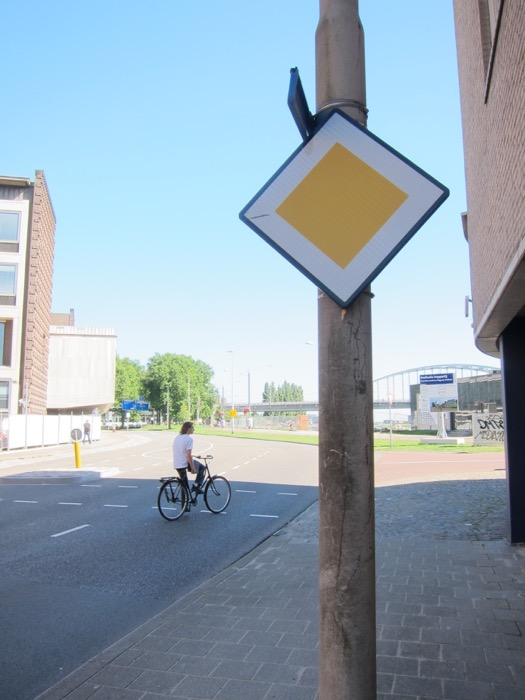
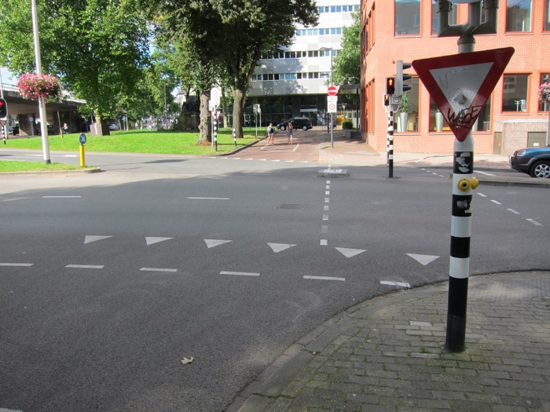

(While this page is already public, this page is not yet ready. It will probably be hosted somewhere else when this page is 'ready'. If you have reached here, welcome anyway!)
No country in the world has better cycling infrastructure than the Netherlands and Denmark. In the Netherlands, the vast majority of motorists are themselves cyclists; the Dutch motorist association, ANWB, started off as a cyclist club, and is still majorly involved in cycling issues. Looking out for cyclists is a prominent part of driver training in the Netherlands.
One thing that is absent(?) in the Netherlands is road-side bicycle hires. But then, that is not really needed in the Netherlands; people already have multiple bicycles parked at various train stations, or they ride all the way to everywhere, or they have a folding bicycle that they take on trains, or they have a subscription with OV-fiets, or something like that. There are many shops that tourists and other people can hire bicycles from.
An OV-fiets.
Bicycle paths are ubiquitous. Amongst the bicycle paths is the bicycle route network fietsroutenetwerk (a.k.a. the bicycle junction network fietsknooppuntennetwerk). Important bicycle path junctions are given numbers, and the numbers – and directions to them – are signposted along the routes of the network (see examples in the Dutch Wikipedia article; see photos below). The network was first built in northern Belgian Limburg, the network now covers the entirety of Flanders and Netherlands. The network extends into some bordering parts of Germany, and parts of Wallonia have joined. (Most prominently, Western part of Hainaut Province, the East Cantons (Eupen-Malmédy) of Liège Province. Parts of the Namur and Luxembourg Provinces have little networks that are not yet joined to the main network. See Dutch Wikipedia article.) (Prominently absent from all this is the Brussels-Capital Region.) Many guidebooks and digitial guides give recommended scenic routes in strings of bicycle path junction numbers. There are numerous websites and apps that show the network, with some also allowing you to draw your own map by clicking/pressing the numbers of the junctions in the order that you want. One Dutch example with English, another Dutch example, another Dutch example, a Belgian example.
Mostly-overlapping with the bicycle route network is the LF network, (landelijke fietsroute 'national bicycle route', or lange-afstand fietsroute 'long-distance bicycle route'), which covers the whole Netherlands and Flanders. Other than signs for the numbered bicycle junctions, you will also see very-similar-looking signs for the LF routes (see photos below). The LF routes are recreation-oriented long distance bikeroutes (they are not necessarily the most direct route between urban centres). LF is followed by the route number, and then an a or a b, which indicates the direction: a is generally from north to south, or west to east, while b is generally from south to north, or east to west. For instance, LF1 runs roughly along the western coast: LF1a indicates LF1 in the direction from Den Helder (Noord-Holland) in the north, to Boulogne-sur-Mer (France) in the south; LF1b indicates LF1 in the reverse south-to-north direction. The long-distance bicycle route network counterpart is called RV (Rando-Vélo) in Wallonia, PC (pistes cyclables) in Luxembourg, D-Route in Germany.
Bicycle helmets are usually only worn by children, professionals and other 'fast' cyclists, or foreign tourists. Netherlands has the second best bicycle safety record in Europe after Denmark (in terms of deaths per cycled distance). Some reading on cycling in the Netherlands.
Fietsenstalling is a bicycle parking garage/facility. There are public bicycle garages all around the country, most of them free. A bewaakte fietsenstalling is one that is watched by an attendent. Typically, when you enter with a bicycle, a ticket is attached to the bicycle, and a corresponding ticket is given to you. You then park your bicycle inside (you have to use your own bicycle lock). When you leave, you have to show the ticket, matching the ticket attached to the bicycle. The attendent will then take your ticket, and remove the ticket attached to the bicycle, and then you are free to go. There are other types of bicycle storage facilities. For example, see what NS has to say about the various types of bicycle storage facilities near train stations (most of them charge an acceptable amount of money). Some Fietsenstallingen do not allow overnight parking. Do not leave valuables with your bicycle, and invest in/borrow a heavy-duty bicycle lock: bicycle theft is a common occurrence in the Netherlands.
The entrance of a free guarded bicycle garage.
ANWB, other than providing roadside services for cars, also provides roadside services for bicycles (and also other types of vehicles). You might also want to consider bicycle insurance.
Electric bicycles are also popular (being frail or less fit is not an excuse for not cycling in the Netherlands). Public charging stations for electric bicycles are increasing seen. One electronic map of electric bicycle charging spots in the Netherlands, one in Flanders.
See above for the carriage of bicycles on international trains, and above on domestic trains. Carriage of bicycles on buses is generally not allowed in the Netherlands, unless it is a (small) folded-up folding bicycle. Try searching for fiets meenemen (bicycle along-take) on the websites of the individual public transport providers.
Remember that all parts of the Kingdom of the Netherlands, like the rest of Continental Europe, has right-hand traffic; traffic goes on the right hand side of the road/path. (Well, with bicycles, sometimes Dutch people rides creatively.) See also the section on driving for give way rules, which apply equally to cyclists (and moped-riders, etc.).
A mini glossary of cyling-related words and traffic signs:
also informally in Belgian Dutch: velo, velo's, velootje.
Frisian: fyts, fytsen, fytske. Rydwiele.
French: vélo, plural vélos.
Swiss German: Velo, plural Velos.
German: Fahrrad, plural Fahrräder.
to cycle (v.):
Dutch: fietsen.
Frisian: fytse.
French: faire du vélo 'to ride bicycle', aller en vélo à X 'to go by bicycle to X'.
German: Fahrrad fahren. Ich bin nach X geradelt. 'I rode to X'. In Southern Germany, radeln 'to cycle'.
(The 'sign numbers' mentioned below, e.g. 'sign E2', are their numbers in Dutch traffic law.).
The two signs in the foreground on the right: top (sign E2) – no stopping; bottom, bicycle icon in white circle with red border (sign C14) – no entry for bicycles, and non-motorised handicap vehicles (in this direction; not shown clearly in this photo is the bikepath for the opposite direction on the left-hand side of the road).Moped icon in white circle with red border (sign C13) – no entry for mopeds (both bromfietsen and snorfietsen; see below), and motorised handicap vehicles. These vehicles should go to the road on the right.Top (sign C2) – no entry, one way-street in the other direction; middle: uitgezonderd 'except' bicycles, i.e. (only) bicycles can enter; bottom (zone sign A1) – maximum speed 30 km/h zone; you (cyclist) are now entering a 30 zone.Blue rectangular sign on right with fietspad 'bicycle path' in white writing (sign G13) – non-compulsory bicycle path. (Compare this sign G13 with sign G11 in the following figure.) Signs in the middle, top, white inverted triangle with red border (sign B6) – give way. Underneath: bicycle traffic in two directions. Also notice the row of inverted triangles painted on the ground: they are called haaientanden 'shark's teeth' in Dutch, and is the equivalent of a give-way sign. Shark's teeth are also often found in intersections between bicycle paths.)  Sign on the left, bicycle icon in blue circle (sign G11) – compulsory bicycle path. Bicycle paths are often paved with red bricks/painted with red-brick colour, but road surfaces with red bricks/red-brick colour are not necessarily bicycle paths, as in the street to the right (see the following figure).Signs in the foreground: top (zone board sign E1) – you have entered a no parking zone (no kerbside parking), middle, white arrow to the top in blue square (sign C3) – one way street; bottom: uitgezonderd 'except' bicycles and mopeds. So this street is a two-way street for bicycles and mopeds, but a one-way street for other vehicles. Red bricks are often used for roads where the speak limit is low. The line of white bricks on each side of the road demarcates suggested bicycle lanes.Foreground, moped icon and bicycle icon in blue circle (sign G12a) – moped and bicycle path. At the end of this very short moped/bicycle path is a set of traffic lights with bicycle icons, just for this moped/bicycle path. They operate independently from the pedestrian lights to the right.Compulsory bicycle path in one direction (as indicated by the arrow).Rechtsaf voor fietsers vrij. Right-turn on red allowed for cyclists. So all traffic has to wait for green lights to proceed, except for cyclists turning right.Top, arrowed white signs with red writing and red border (signs K7) – direction signs for cyclists and moped riders. Station is train station, Centrum is city centre, Fietsenstalling is a bicycle garage (place to park bicycles), and the others are place names.Bicycle direction signs with green writings: the circled numbers with an arrow indicate directions to the fietsknooppunten 'bicycle junctions' (see above). U nadert het knooppunt 'You are approaching the junction', in this case it is referring to junction number 41. There are also the signs for the LF routes (see above).This is junction number 41. There is a (not very big) information board about the local area (see below).This is the information board at junction number 41. It states that this is knooppunt 'junction' number 41 of the Veluwe fietsroutenetwerk 'bicycle route network'. It gives a map of (some of) the bicycle junctions in the wider area, the bicycle paths that link them, explanations on the bicycle route network system, and some touristic information.Doorgaand verkeer 'Through traffic'. For through traffic, take the left bicycle path. The right bicycle path is for local traffic.You are currently on a road for all traffic. Top: end of paid-and-display parking zone; bottom, yellow diamond with white border (sign B1): you are on a priority road, you do not need to give way to traffic coming in from a side street. (Further forward is a compulsory bicycle path; cars have to turn right.)
Moped-riders veer right into the moped/bicycle-path. (On moped/bicycle-paths, you may see an analogous sign with a bottom-left-pointing arrow; that means moped-riders leave the path and veer left into the main road.) Bottom: Moped-riders veer right into the moped/bicycle-path. (On moped/bicycle-paths, you may see an analogous sign with a bottom-left-pointing arrow; that means moped-riders leave the path and veer left into the main road.) Adult and child icon in blue circle (zone sign G7) – footpath zone (pedestrian area). Underneath: Fietsen toegestaan als winkels gesloten zijn; snorfietsen niet toegestaan 'Cycling allowed if shops are closed; moped-riding not allowed'Underneath: Expeditieverkeer toegestaan ma t/m za 6-11h 'Delivery traffic allowed Mon–Sat 6am–11am' Fietsen toegestaan buiten markttijden; snorfietsen niet toegestaan 'Cycling allowed outside market times; moped-riding not allowed'Hier geen fietsen plaatsen 'Do not place bicycles here'. (Geen is a negator.) In busier areas, many places put up such signs. In the Netherlands, one informally parked bicycle can easily become a crowd of parked bicycles that grows out of hand, and becomes a major obstacle to pedestrians.Fietsen stallen aan de overzijde 'Park bicycles on the opposite side'.verboden (brom-)fietsen te plaatsen m.u.v. in fietsrekken/aangewezen plaatsen 'Forbidden to place bicycles/mopeds, with exception of bicycle racks and designated places'.
Other two/three wheeled vehicle
electric bicycles are considered bicycles, if they cannot go faster than 25 km/h. A driver's licence is not required for bicycles. (Rijksoverheid says so)
there are two words that can be translated into English as 'moped'. The first is a bromfiets. They have a registration plate with black writing and yellow background. They have a maximum speed of 45 km/h, and cylinder capacity of not more than 50cc, or electric motor with maximum net power of not more than 4kW. A class AM driver's licence is required.
snorfiets is legally a subtype of bromfiets. Snorfietsen have a registration plate with white writing and blue background. They have a maximum speed of 25 km/h
Registration plates of a bromfiets (proper) on the left, and snorfiets on the right (the registration plates are partially masked here). Bromfietsen and snorfietsen do not necessarily look like these.
a 'motorcycle' is a motorfiets. It has cylinder capacity of more than 50cc, or capable of speeds above 45 km/h. There are the driver's licence classes of A1, A2, and A. See what the European Union says on the classes of driver's lincence in the European Union. Motorcycles have 'normal' registration plates like cars (but the dimensions are different).
Car-sharing
Autodelen. This is an option if you stay in the Netherlands long enough, if you don't own a car. There are two types.
With the first type, you become a member of a company, you go to their website/app, and book a vehicle for a period of time. Vehicles of the company can be found on street locations. You are charged by the amount of time and distance used.
Greenwheels has the widest distribution of vehicles in the Netherlands. Many are placed near train stations. You have to return the vehicle back to its dedicated parking spot at the end of the ride.
A Greenwheel car in its own reserved parking spot. Very iconic what will happen if other vehicles take this parking spot. (If someone actually parks their vehicle in your Greenwheels parking spot, park in a public parking spot nearby and ring Greenwheels for instructions.)
ConnectCar is similar to Greenwheels. Cars available in bigger cities in the west of the country.
car2go, in the Netherlands it operates only in Amsterdam. Some vehicles can only be picked up with their app on a smartphone. At the end of your ride, you can leave the vehicle at any public carpark spaces within their operating area, or at certain dedicated spots. Their cars have only two seats.
With the second type, the company connects a hirer with another person's vehicle.
TrexCar, currently operating in Nijmegen, connects hirers with second-hand cars sitting idle at car dealers. 'You get a car nearby within 5 minutes'.
Driving
(There are many traffic legal issues discussed in this section. I try to describe what I know (in 2016) as accurately as possible, but I cannot be held accountable for the accuracy of data. Rules can change quickly; please check with official sources elsewhere.)
Foreign cars and driver's licence
Another way to visit European Netherlands is driving in from neighbouring countries. The Netherlands has a good road network. Many vehicles with foreign registration plates drive on the roads in the Netherlands. Vehicle with German or Belgian registration plates are commonly seen. Right-hand-drive vehicles from UK are sometimes seen (e.g., visiting Commonwealth war graves). The furthest vehicles I have seen on the streets of European Netherlands are from Azerbaijan, Dubai, and Aruba (!). (I do not know what the legal situation is, for vehicles coming in from outside European Union/Schengen Zone.) For EU citizens visiting another EU country for less than 6 months, you can keep the original registration plate. For visit longer than 6 months, you have to change the registration plate to that of the destination country (see here). In European Netherlands, when you register as a resident of the Netherlands and if you come with a foreign vehicle, you must change the registration of the vehicle to the Netherlands within 14 days. See what RDW has to say about regulations on importation of vehicles into the Netherlands when you move to the Netherlands.
Driver's licences from other EU countries and EFTA countries are valid in the Netherlands. I do not know what the situation is with licences from other countries. At rental car companies, non-European driver's licences are generally accepted if it is in Dutch or English, or perhaps French. Inquire with the rental car company whether you need an International Driving Permit or not. If you are moving to, or are living in the Netherlands, see what CBR says about the validity of your foreign driver's licence. (Apparently all parts of the Dutch Caribbean are considered 'other countries'.)
Emergency tools and winter tyres
It seems like that none of the emergency tools that are obligatory in other European countries are obligatory in the Netherlands. Having a gevarendriehoek 'emergency triangle' and veiligheidsvest 'safety vest' are not obligatory in the Netherlands. However, it is still recommended to have them in your car. For instance, in an emergency you have to use either waarschuwingsknipperlichten 'hazard warning lights' or a gevarendriehoek 'emergency triangle'; if the lights do not work, then you must have, and use, emergency triangles. Another thing handy to have are spare bulbs (which are not obligatory): you can receive a fine for not having working headlights and taillights. Other things that are not obligatory include fire extinguisher, life hammer, and first-aid kit. See ANWB's list of emergency tools that are required in other European countries.
Winter tyres are not obligatory in the Netherlands. In nearby countries:
Belgium: not obligatory
Luxembourg: obligatory
Germany: obligatory
France: obligatory when announced
Road tolls and environmental zones
Nearly all roads are toll-free for cars in the Netherlands. There are only two toll-tunnels in the Netherlands, both underwater tunnels: the Westerscheldetunnel in southern Zeeland Province (the long north-south tunnel to the W of Terneuzen), and the Kiltunnel in southern Zuid-Holland Province (the short east-west tunnel to the SW of Dordrecht). Toll for trucks (≤ 12 tons) nationwide: Eurovignette.
In nearby countries:
Belgium: nearly all roads are toll-free for cars. There is one underwater toll-tunnel in Belgium: the Liefkenshoektunnel in Antwerpen Province (the cross-river tunnel downriver/NW of Antwerp; part of the Antwerp ring route R2.). Toll for trucks (<3.5 tons GVW) nationwide: Viapass.
Luxembourg: roads are free for cars. Toll for trucks (≤ 12 tons) nationwide: Eurovignette.
Germany: basically all roads are free for cars. There are talks of introducing tolls for cars with foreign registration plates. Toll for trucks (≤ 7.5 tons) nationwide: Toll Collect.
France: most motorways are tolled, and you pay at tollbooths. There is an automatic payment system. There are also other payment methods. For drivers from Britain going to Benelux via Dover–Calais, some toll-free sections of French motorways (please make contributions to the French economy in other ways):
A 16: Boulogne-sur-Mer – Calais – Dunkerque – Belgian border (parallel to the coast); E40
N 225/A 25: Dunkerque – Lille (parallel to the border); E42
(All motorways in the Lille area are toll-free; there are a number of shorter motorways connecting the ones listed here)
A 22: Lille – Belgian border to the N; E17
A 27: Lille – Belgian border to the E; E42
A 23: Lille – Valenciennes (parallel to the border)
A 2: Hordain – Valenciennes – Belgian border to the NE; E19
Many city centres in the Netherlands have milieuzones 'environment zones'. Vehicles that are too polluting are not allowed to enter a milieuzone. Currently (2016), 13 cities have milieuzones that disallow diesel trucks weighing over 3500 kg to enter if they only comply with Euro 0, Euro 1, Euro 2, or Euro 3 emission standard. These 13 cities are:
Noord-Holland: Amsterdam
Zuid-Holland: Rotterdam, Den Haag (The Hague), Rijswijk, Delft, Leiden
You are now entering a Milieuzone. This one is only for trucks.Milieuzone straightahead for trucks; if you do not qualify, you have to go right. 
In addition, five cities – Utrecht, Amsterdam, Rotterdam, Leiden, and Nijmegen – currently have, or introducing, or studying the possibilities of, restrictions for older benzine cars, diesel cars, scooters, and/or mopeds into their city centres. See details from ANWB. (Study these rules carefully if you are purchasing a vehicle to use in the Netherlands.)
In neighbouring countries:
Belgium: according to the Flemish government: Antwerp is introducing a lage-emissiezone (LEZ) 'low-emission zone' in 1 February 2017, and Gent is introducing a LEZ in 2020; Brussels Captial Region (outside of their jurisdiction) is introducing a LEZ in 2018.
Germany: a great number of cities have an Umweltzone 'environment zone' in their city centres; to enter such zones, you need an Umweltplakette, which comes in the form of a sticker. Basically all cities now require a level 4/green sticker (the highest level). Some information in English. Stickers can also be organised in neighbouring countries, and on the internet. It is usually cheaper to do it in Germany, at places like TÜV. (They can handle cars from other European countries. But then you would need to find a branch of TÜV or a similar place outside an Umweltzone if you don't already have an Umweltplakette...)
France: there are already restrictions on trucks in Paris. France has recently introduced vignettes (sticker) for different emission levels for all motor vehicles. In Paris, the sticker will become compulsory in its zone à circulation restreinte from 1 January 2017. Older cars with bad emission levels will not be allowed into the zone. (Something like that...)
There are somewhat fewer speed limit signs in the Netherlands than countries with British- or American-type road infrastructure; motorists in the Netherlands are expected to know the default speed limit based on other information, e.g. the type of vehicle they are driving, the type of road that they are driving on, road markings, whether they are driving inside or outside built-up areas. The speed limits outlined below apply only to private motor cars; other types of vehicles could have lower speed limits.
There are two types of fast highways in the netherlands. A motorway/controlled-access highway is autosnelweg, and the maximum speed limit is 130 km/h, unless otherwise signaled. Autosnelweg is also known as snelweg, or sometimes autostrade in Flanders, or sometimes autobaan in some parts of Netherlands closer to Germany. The beginning is signaled by sign G1, and the end is signaled by sign G2. Only vehicles faster than 60 km/h may enter the autosnelweg (i.e. no mopeds, bicycles, pedestrians etc.) Autosnelwegen are fully grade-separated, physical barriers separate opposing traffic flows, and there are at least two lanes each way. The road surface of Dutch autosnelwegen has excellent water-drainage properties (flooding is the number-one taboo in the Netherlands), off ramps are generally wide and have gentler curvatures, allowing motorists to decelerate less abruptly. (Dutch autosnelwegen are better than German Autobahnen in these two regards.) This is a map of speed limits on Dutch motorways from Rijkswaterstaat.
A limited-access highway is autoweg, and the maximum speed limit is 100 km/h, unless otherwise signaled. The beginning is signaled by sign G3, and the end is signaled by sign G4. Only vehicles faster than 50 kh/m may enter the autoweg (i.e. no mopeds, bicycles, pedestrians etc.). Autowegen often have autosnelweg-like properties, but sometimes there are traffic lights, large roundabouts, and sometimes there is no physical barrier between opposing traffic.
If you are not on an autosnelweg or an autoweg, then you need to know whether you are inside or outside a built-up area. The traffic signs H1 and H2 are not there to say 'Welcome to X!' and 'Farewell!' (often places would put up signs saying so); signs H1 and H2 tell you more than just the name of the city/village/locality: they tell you that you are entering and leaving a bebouwde kom 'built-up area'.
Outside built-up areas:
Stroomweg, with double white centrelines (continuous or broken), and a continuous green centreline sandwiched between the two double white centrelines: 100 km/h, unless otherwise signaled
Gebiedsontsluitingsweg, with double white centrelines (continuous or broken): 80 km/h, unless otherwise signaled
Erftoegangsweg, single or no centrelines: 60 km/h, unless otherwise signaled.
Inside built-up areas, the speed limit is 50 km/h, unless otherwise signaled.
There are also many 30-zones: it is signaled by zone sign A1 (30) when you enter, and zone sign A2 (30) when you leave. In the entire zone, the speed limit is 30 km/h. Most usually, there are no give-way/stop signs at the intersections within a 30-zone; you have to be careful at each intersection, and give way to all traffic coming from the right (including mopeds/bicycles), even if you are going straight ahead (which is the usual rule at interserctions with no give-way/stop signs).
Zone sign A1 (30): you are now entering a 30 km/h zone  Zone sign A2 (30): you are now leaving a 30 km/h zone
Sign G5 indicates that you have now entered an erf. The speed limit is 15 km/h. Pedestrians can walk the entire width of a street, and, e.g., children can play in the middle of the street. A motorist must not hinder a pedestrian in an erf. Otherwise, normal give way rules apply.
The following are brief summaries of basic speed limits in nearby countries:
Belgium:
autosnelweg/autoroute/Autobahn: 120 km/h
autoweg/voie express/Autostraße (opposing traffic separated by physical barriers, at least two lanes each way): 120 km/h
Outside built-up areas: 90 km/h
Inside built-up areas: 50 km/h
Luxembourg:
Autobunn/autoroute/Autobahn: 130 km/h, or 110 km/h when it rains
Schnellstrooss/voie express: I don't know
Outside built-up areas: 90 km/h
Inside built-up areas: 50 km/h
Germany:
Autobahn: by default there is no speed limit for ordinary cars (talking about speed limits on the Autobahn in Germany is like talking about gun control in the USA). The advisory speed limit is 130 km/h; if you drive above that and are involved in an accident, your insurance could potentially be compromised, even if you are not at fault. Even if you are driving at 160 km/h, there would still be cars overtaking you in whoosh. In reality, about 50% of the motorway distance in Germany has obligatory speed limit signs of 130 km/h or lower.
Autostraße: Germany does not have specific speed limit for Autostraßen. Like Autobahnen, if an Autostraße is outside built-up areas, has opposing traffic separated by physical barriers, and has at least two lanes each way, then there is no speed limit. Otherwise, it has the general outside-built-up-area speed limit of 100 km/h. In reality, nearly all Autostraßen have obligatory speed limit signs, often 100 km/hcar.
Outside built-up areas: 100 km/h
Inside built-up areas: 50 km/h
France:
autoroute: 130 km/h, or 110 km/h when you have to use windscreen wipers
voie express: 110 km/h, or 100 km/h when you have to use windscreen wipers
Outside built-up areas: 90 km/h, or 80 km/h when you have to use windscreen wipers
autoroute inside built-up areas: 90 km/h
section aménagée inside built-up areas: 70 km/h
Inside built-up areas: 50 km/h
Route numbering
Autosnelwegen have an A-number; A stands for autosnelweg. The Netherlands has an extensive network of A-roads. A is followed by one numeral, two numerals, or in less than 10 cases, three numerals (with the largest being A348). For instance, A1 runs from Amsterdam west to the German border, A10 is the Amsterdam ring road, A270 is a short section of motorway east of Eindhoven. There are weak tendencies, but there is no strong patterning of the numbering system. See English Wikipedia's list of motorways in the Netherlands.
Other the A-road network, there are also the N-road network. N stands for... niet-autosnelweg 'non-motorway'. (This is a multiple-choice question in the Dutch theory exam; the other choice for this 'what does N stand for?' question is nationaal.) Autowegen have N-numbers, but N-roads are not necessarily autowegen; N-roads can also be ordinary roads. Non-motorway continuations of A-roads (motorways) have the same N-number. For example, A9 in Noord-Holland continues further north as N9. The highest-numbered A-road, A348, continues a long way north as N348. Numbers up till 399 are for inter-provincial roads; numbers from 401 to 999 are divided into blocks for each province. See Dutch Wikipedia's page on provinciale weg for N-roads (and provincial A-roads) in the Netherlands.
The following is an example of signage of A- and N-roads: A-road numbers are white on red background, whereas N-road numbers are black on yellow background. (You might have to zoom-in a lot to the road sign on the left.)
There are also S-routes in some cities (S stands for stad 'city').
Parallel to the A- and N-numbers are the E-numbers for the International E-road network. The E-road numbers are well signposted (on the routes themselves), but not well known amongst road-users in the Netherlands.
Situation is nearby countries:
Belgium: Motorways are primarily known by their international E-numbers. There is also a national system for road numbering, but they are generally only known if an E-number does not exist.
A for autosnelweg/autoroute/Autobahn 'motorway'; A-roads can also be autowegen/voies express/Autostraßen.
R for ringweg in Dutch (ring roads in cities and towns; can be of any road-type)
B for bretel in French (link roads; perhaps you won't see signage of these rare types of road)
N for nationale weg/route nationale (can be of any road-type)
The situation with fossil fuel in the Netherlands is similar to other Western countries. Petrol (Euro 95, Superplus 98), diesel are the most common. LPG, natural gas (aardgas), E10 (blue one) and E85 are a little bit harder to find. Searching on the internet for something like brandstof 'fuel' or brandstofprijzen in Nederland 'fuel price in Netherlands' will give you a list of websites that compare the price of fuel at petrol stations in the Netherlands.
Germany, Belgium, and France have cheaper petrol than the Netherlands. Luxembourg has the cheapest of all. See what ANWB says on fuel price in Europe.
For electric cars, if you need to use public charging facilities, there are plenty of dedicated parking spots with public electric charging facilities, on streets or in carparks. They belong to various companies, and you need to have a subscription with a comapny before you can use their charging apparatuses. This is a list of electric car charger companies operating in the Netherlands (they also have lists of companies in many other countries). Also try searching for something like elektrische auto oplaadpunten nederland 'electric car charge-up-points Netherlands' on the internet, and there are a number of websites with electronic maps of charging point, and information about the companies that own the individual charging points. Companies that operate in the Netherlands often also operate internationally in at least Belgium and Germany, so Dutch electric cars can also use charging facilities in neighbouring countries, and vice versa.
opladen elektrische voertuigen 'charge electric vehicles'. Two carparking spaces with charging facilities  Naast de kosten voor het opladen, bent u hier ook parkeergeld verschuldigd. ≈'Besides the costs of charging, you also have to pay for parking here'. Betalen kan via de telefoon, pas of betaal bij de parkeerautomaat ≈'Payment can be made via mobile telephone, card or pay at the parking machine'.Two cars charging. They both have a residents' parking permit (the yellow-green card on the windscreen). 
Parkeren is mostly like other places in Europe. For public paid parking, there is parkeren op straat, which is usually more expensive than parkeren in parkeergarage. Parking can be paid by cash, bankcards, credit cards, mobile phone, and/or an app. The website of each gemeente 'council' has details on parkeren within their boundaries.
Parking machine on street. At this location, you can pay with coins, bankcard, credicard, mobile phone, parking card (the receptacle is on the left), or app (with the last three, you need to have a scription with a company first).
Some places use the Parkeerschijf 'parking disc'. You set the time of arrival on the parking disc. (I have read that:) You can set it to the closest half hour in the future, e.g. if you arrive at 10:20, you can set the disc to 10:30.
If you live in a city where parking is restricted, you might want to apply for things like:
parkeervergunning bewoners 'residents' parking permit' (the waiting list can be very long)
parkeervergunning bezoekers 'visitors' parking permit' for your visitors
gehandicaptenparkeerplaats bij woning 'handicap parking space at home'
laadpaal aanvragen 'ask for (e-vehicle) charging pole'
ontheffing rijden in het voetgangersgebied 'exemption for driving in pedestrial area' (e.g. if you live inside one)
Some parking-related signs:
sector A vergunninghouders '(parking for) sector A permit holders'  Nooduitgang geen auto's plaatsen 'Emergency exit, do not park cars (here)' (geen is a negator)  Uitrit Vrijlaten 'Keep driveway free' (do not park here)Vrij 'Free': there are unoccupied parking spaces here. ('Free' does not mean no cost. IJ)herhaling 'repetition', as in the parking-machine zone started somewhere else, this is just a reminder. donderdag 18–23 h zaterdag 09–23 h zondag 12-23 h 'Thursday 6–11pm Saturday 9am–11pm Sunday 12–11pm' 
Other things about Dutch driving infrastructure and culture
Before the Netherlands, my driving experience was mostly in New Zealand and Australia. The following are some things that I think are noteworthy about the driving infrastructure and culture in the Netherlands, from my NZ/AU background.
An abridged version (January 2013) of the Dutch 1990 Traffic Rules and Signs Regulations (RVV 1990) in English is here. (Check with Rijksoverheid to see whether this is the most recent version.)
The Netherlands has right-hand traffic; cars have left-hand configuration. People overtake on the left, and roundabouts go anti-clockwise. This is the case in most of the world. Right-hand-drive cars from UK are sometimes seen in the Netherlands. If you drive a right-hand-drive car, you need a passenger to your left to look properly whether you can safely overtake or not (on roads where you would expect oncoming traffic).
You drive (and cycle, etc.) on the right, and give way to the right (unless there are other traffic signs/lights that overwrite that).
This 'give way to the right' rule is important: there are more intersections with no giveway/stop signs than you might expect. Firstly, there are the 30-zones (also see above): usually, there are no giveway/stop signs at the intersections within a 30-zone; that means that you have to slow down and be careful, and give way to all traffic (including cyclists) coming from the right, even if you are going straight ahead.
Some roundabouts, and some roundabout-lookalikes (which are in fact circular roads), require you to stop in the middle of it. The following is one example; because there are no giveway/stop lines, you have to slow down or stop in the middle of it and give way to any vehicles coming in from the right. (A reminder that roundabouts go anti-clockwise.) If you enter a roundabout without a give-way/stop sign, it is probable that the other enterences also lack give-way/stop signs. (Maybe you have to press 'View larger map', and specify 'labels off' from the menu to see clearly.)
The following is another example. In this circular road (with no lanes), there are traffic lights for both entrences and exits; you have to stop in the middle of the circular road (i.e. right in front of the lights, or in queues formed in front of it) if the lights at an exit is red.
In the Netherlands, remember that when you turn right, you have to give way to cyclists and pedestrians going straight ahead to your right. Look extra carefully for cyclists and pedestrians whenever you turn. (This give way rule might be different in other European countries.)
Differences in road signs: the differences are not huge; a tourist from outside Europe would probably understand most of the road signs in the Netherlands. The road signs in New Zealand, Australia, Republic of Ireland, USA, Canada etc. belong to one type, where warning signs are yelow diamonds with black border. The Netherlands and the other European countries, including UK and Turkey (and South Africa, etc.), belong to another type, where warning signs are white upright triangles with thick red border. See this list of roadsigns in the Netherlands, and a comparitive list of road signs in European countries. (These are unofficial sources; please check with offical sources.)
A yellow diamond with thick white borders (sign B1) signifies a priority road; you have priority over traffic coming in from side streets. When it is canceled (sign B2), you might need to give way soon.
Sign B1: priority road  Sign B2: end of priority road
Row of inverted triangles painted on ground: these are called haaientanden 'shark's teeth', equivalent of a give-way sign. They are also commonly found on bicycle paths.

Always be careful of where you have to give-way to cyclists. In this example, there are actually two separate places where you have to give way. At the first give-way sign, the sign underneath warns you that cyclists may come from either direction, after you have safely crossed that, at the second give-way sign, you have to turn right. (Of cause, also look out for pedestrians.)
Dutch drivers often park on the wrong side of the road. Apparently this is legal; driving instructors do that too. (I've heard that this is not the case in certain other European countries.)
There are stories of Dutch drivers having to return without reaching their intended holiday destinations in Switzerland/Austria etc.; their Dutch vehicles cannot cope with the gradients in Southern Germany before the Alps. (Obviously, not all cars sold in the Netherlands are like that, but it is something to consider if you purchase a vehicle in the Netherlands.)
Because of the relative lack of altitudinal difference in the Netherlands, drivers often don't bother with handbreaks/ never use handbreaks/ don't know how to use handbreaks properly. Practical exams do require candidates to perform hill-stop and hill-start, but in most parts of the country, 'Dutch hills', at best. Manual-gear drivers in the Lowlands have different gear-changing habits than drivers who are used to the Alps.
The Netherlands has very good driver education. (Exams were certainly much more stringent in the Netherlands than in New Zealand, except for the lack of 'real' hill-stop/-start.) There is strong emphasis on how to share the road safely with cyclists. The vast majority of drivers know not to hog the fast lanes on a motorway (this is even more important in German Autobahnen, where often there is no speed limit).
Sailing
Ocean sailing and inland water sailing are important for the Netherlands. The Netherlands has the densest waterway network in Europe. Waterways trump roads and railways in the Netherlands; the government agency that is responsible for the construction and maintenance of roads and important railways is called the Rijkswaterstaat. To see how important waterways are (navigable or not), just see how they dive the entire A4 motorway underneath this small ditch. (The story is more complicated than this, but,)
Sorry I don't have much experience in sailing, but here some minimal information. Very useful, but not obligatory to have on your vessel, is the ANWB Wateralmanak, if you can read at least some Dutch. Part 1 contains all the sailing regulations in the Netherlands and Belgium, and part 2 includes useful information like examples of the rules, and the opening times of bridges and sluice gates. ANWB also sell physical/digital nautical maps and atlases at their webshop and physical stores. (I've seen sailors using ANWB physical nautical maps; I suppose they are good.)
There is also Vaarweginformatie, which gives waterway information (provided to them by various offical sources) for free online. There are also apps that give you waterway information in the Netherlands.
The entire coast of European Netherlands is protected by dykes, levees, locks, dams, sluices, and storm surge barriers. There are three places that you can sail in from the sea without encounter a lock immediately:
In the NE: Estuary of Ems (Eems in Dutch), which forms part of the Dutch-German border. (The Ems itself is entirely in Germany. All small rivers that flow into the estuary on the Dutch side are gated.)
In the E: Nieuwe Waterweg and Scheur, which is the exit of Rotterdam. There is the Maeslantkering, a storm surge barrier and one of the largest moving structure on earth, and it is usually open. From here, if you go up along the Oude Maas or Nieuwe Mass, and then grdually make your way to, and then up the Waal, you will reach the Rhine at the Geramny border east of Nijmegen without needing to go through a single lock/sluice (I think).
In the SE: Western Scheldt (Westerschelde in Dutch), which is the exit of Antwerp. The estuary of the Scheldt River. (Small rivers flowing into it are all gated.)
When going through a lock from the sea into an inland waterway, the water goes down; a pleasant way of being reminded that: oh, I am in the Netherlands.